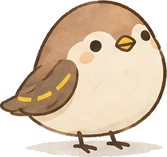
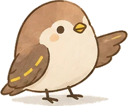

프롬프트 학습
좋은 질문이 좋은 결과를 만들어요
어떤 코스를 고르든 도움이 되는 기초 트랙이에요. 가입 없이 자유롭게 연습해보세요.
✍️ 좋은 프롬프트 작성법
- 지금 내 상황을 적기 (예: 처음 해보는 것이에요)
- 무엇을 원하는지 구체적으로 적기
- 예산이나 조건이 있다면 함께 적기
- 어떤 형태로 결과를 받고 싶은지 말하기 (표, 3가지 등)
- 1. 2. 3. 번호나 - 기호로 조건을 나열하기
Before
여행지 추천해줘After
부부 둘이서 갈 국내 여행지를 찾고 있어요.
이동이 많지 않고 자연 경치를 볼 수 있는 곳으로 3곳 추천해주세요.프롬프트 성장 단계
질문도 계단처럼 한 단계씩
Prompt Coach 자유 연습장
주제 상관없이 아무거나 물어보세요. 동행이가 되물으며 함께 다듬어드려요.
같이 하나씩 만들어볼까요? 걱정하지 마세요, 제가 하나씩 도와드릴게요.
🔒 만드신 프롬프트는 서비스 개선을 위해 익명으로 저장돼요. 누가 만들었는지는 저장되지 않습니다.
무엇을 물어볼지 모르시겠나요?
아래에서 관심 있는 주제를 눌러보세요. 예시 질문을 보여드릴게요.
몇 가지만 더 여쭤볼게요. 편하게 아는 만큼만 적어주세요.

동행이가 프롬프트를 분석하고 있어요...
보통 10~20초 정도 걸려요. 잠시만 기다려주세요.

분석해봤어요. 하나씩 같이 살펴볼게요.
AIWAY가 다시 쓴 프롬프트
처음 입력
추가된 요소
💡 다음에 질문 만들 때 이 4가지를 떠올려보세요
대상 · 맥락 · 조건 · 원하는 형식